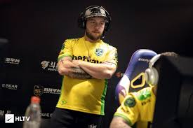

|
 |
FORMAS DE PEÇAS MIBR COM ZEWS
O MIBR anunciou a saída do técnico Wilton "zews" Prado de sua formação com efeitos imediatos.
A saída do zews marca o fim de um mandato de quinze meses para o jogador de 32 anos como parte do MIBR , uma lista com a qual ele se reuniu em dezembro de 2018 como parte de um contrato de transferência com a Liquid que também incluía a troca de Jake "Stewie2K" Yip e Epitacio "TACO" de Melo .
Enquanto Liquid alcançou sucesso com sua nova adição, conquistando cinco títulos consecutivos e a segunda temporada do Intel Grand Slam em 63 dias, o MIBR lutou para publicar resultados. A equipe falhou em alcançar uma grande final ao longo de 22 eventos disputados desde o acréscimo de zews e TACO , com suas melhores colocações chegando do 3º ao 4º lugar no IEM Katowice 2019 e no CS: GO Asia Championships.
Os resultados medíocres da equipe foram agravados por mudanças contínuas em sua lista, à medida que o MIBR buscava substituições de Marcelo "coldzera" David e João "felps" Vasconcellos , eventualmente decidindo por Ignacio "meyern" Meyer e Vito "kNgV-" Giuseppe . Ainda assim, seus resultados não melhoraram, pois ficaram em último lugar no cs_summit 5 e não conseguiram prevalecer em seu grupo no DreamHack Open Anaheim e no BLAST Premier Spring Series. Em uma declaração escrita em português no Twitter , os zews explicaram que a equipe sentiu que "não estava nem perto de alcançar o sucesso que desejava durante esta fase de reconstrução para o MIBR" e assumiu sua parte da culpa, dizendo que não havia feito as ligações que pensava. eram necessários para a reabilitação da equipe e para se contentar com certas decisões que foram tomadas.
